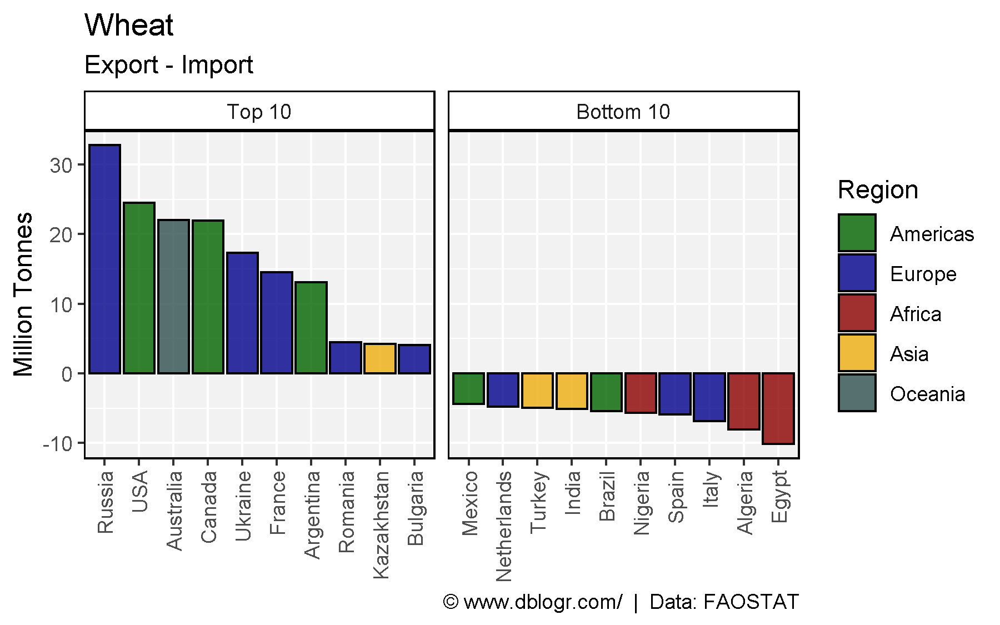
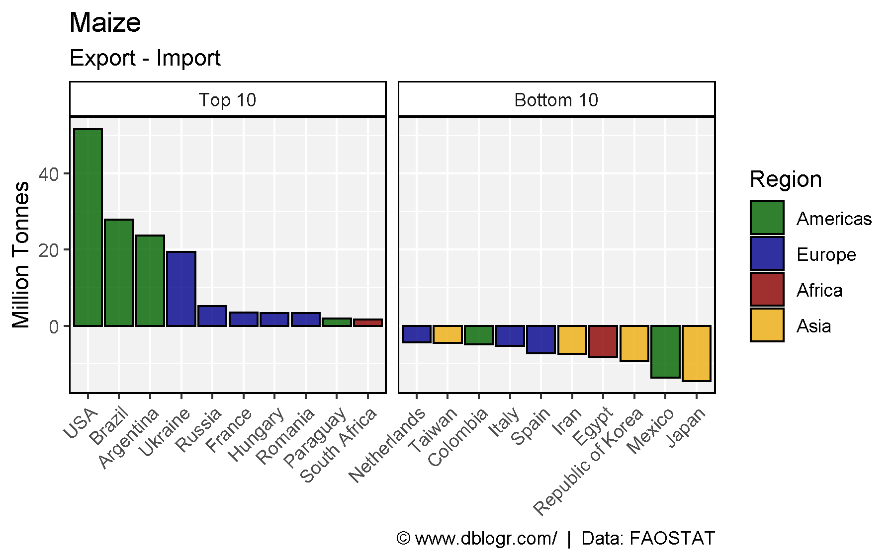
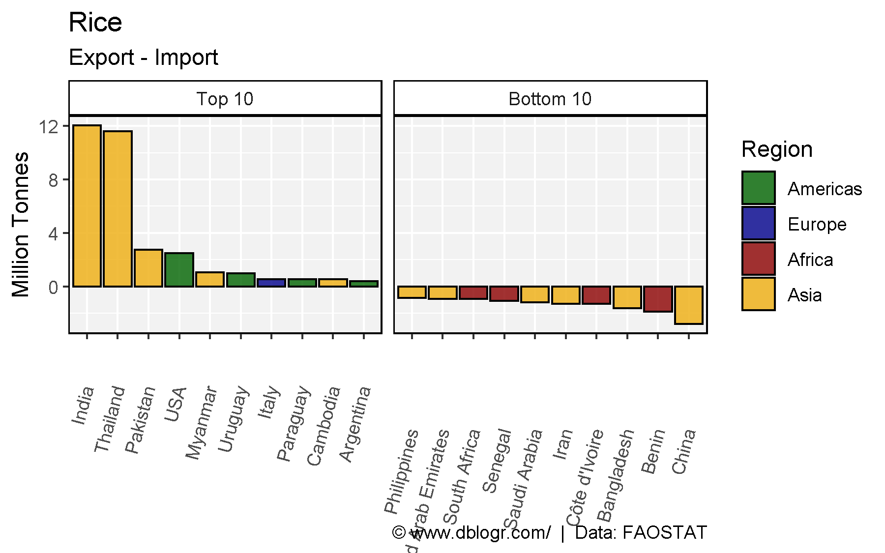
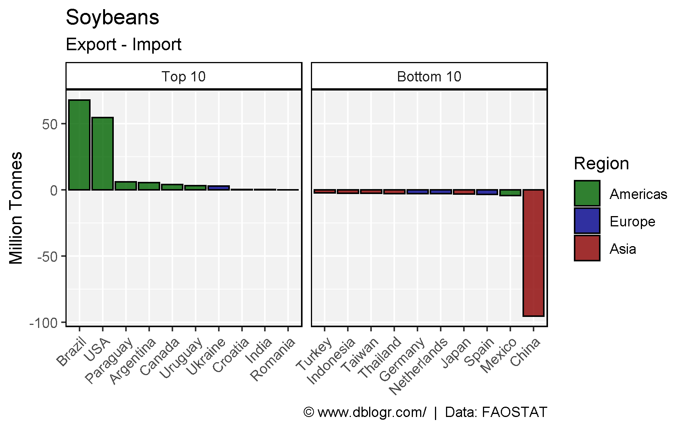
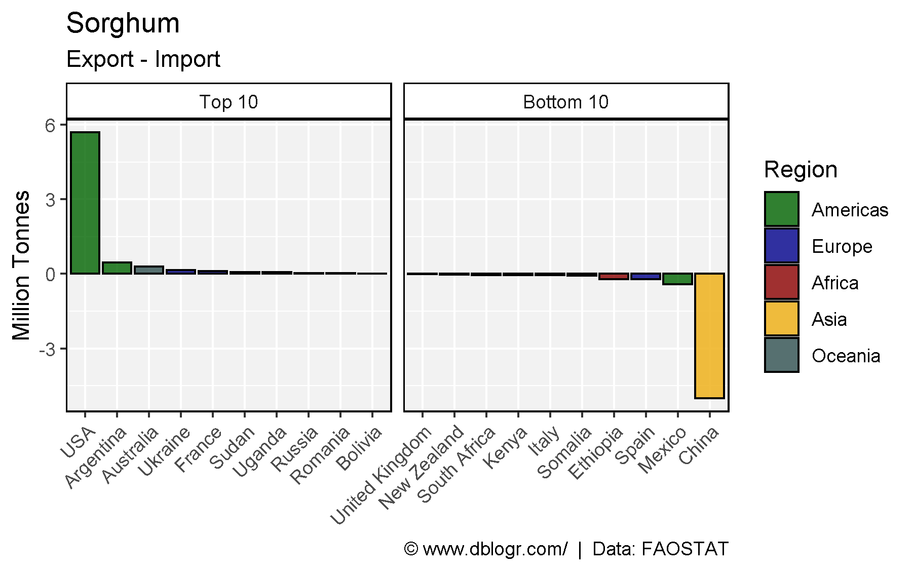
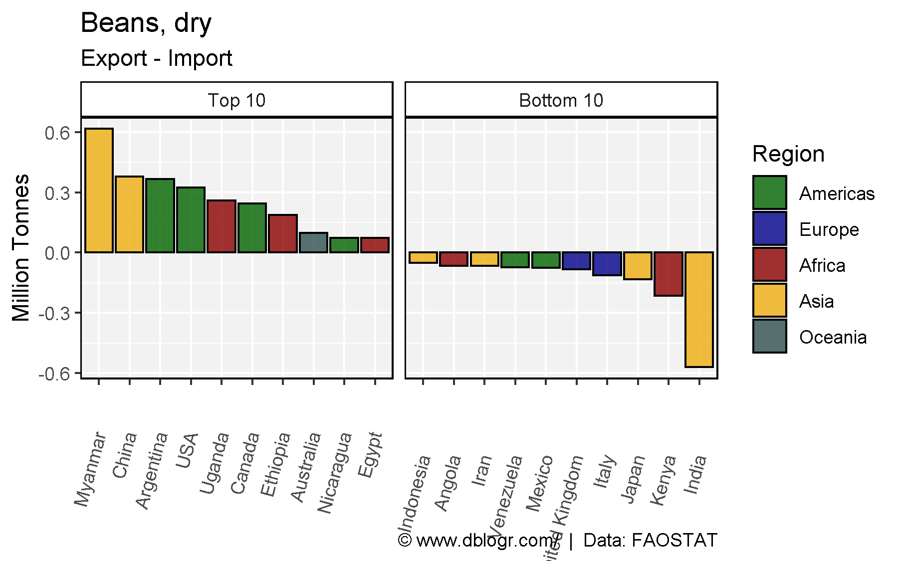
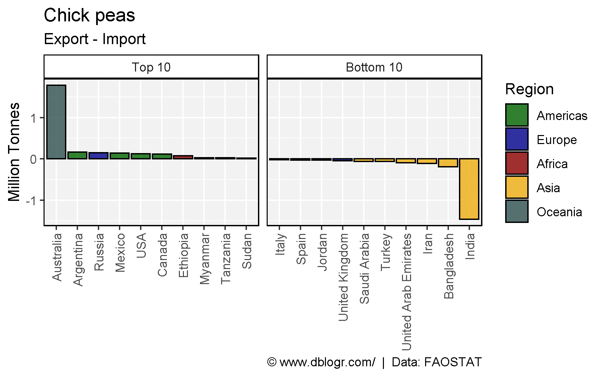
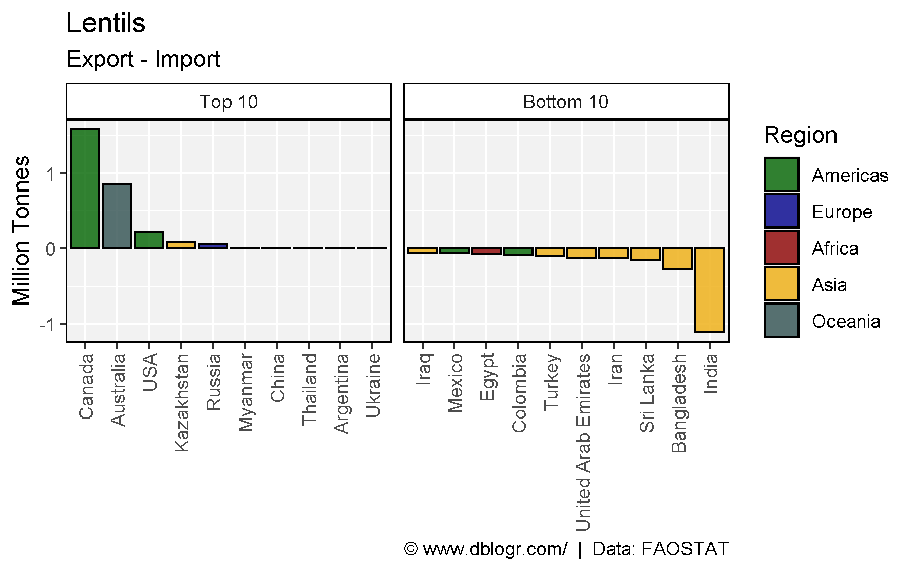
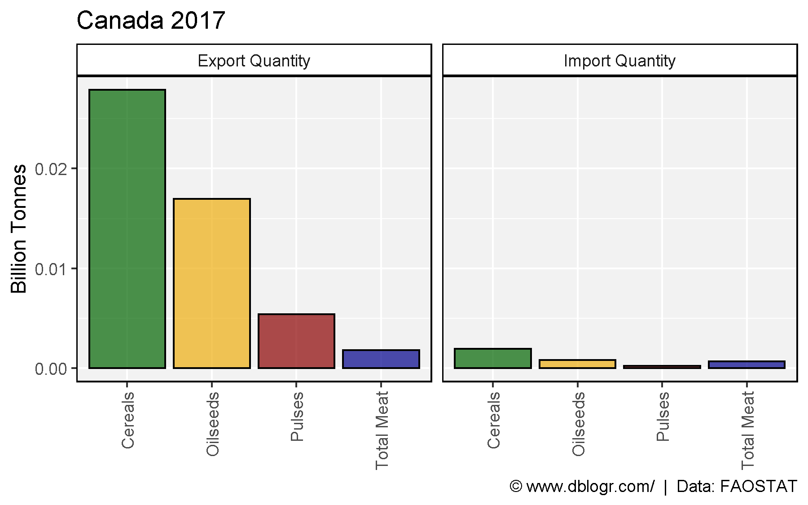
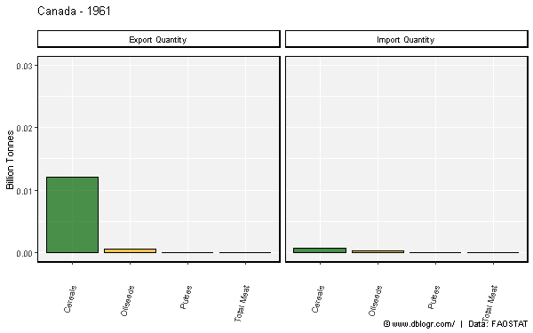

# devtools::install_github("derekmichaelwright/agData")
library(agData) # Loads: tidyverse, ggpubr, ggbeeswarm, ggrepel
library(gganimate)# Create plotting functions
netImportExport <- function(crop = "Wheat", year = 2017) {
# Prep data
aa <- select(agData_FAO_Country_Table, Area=Country, Region) %>% filter(!duplicated(Area))
colors <- c("darkgreen", "darkblue", "darkred", "darkgoldenrod2", "darkslategrey")
xx <- agData_FAO_Trade %>%
filter(Measurement %in% c("Import Quantity", "Export Quantity"),
Area %in% unique(agData_FAO_Country_Table$Country),
Crop == crop, Year == year) %>%
left_join(aa, by = "Area") %>%
spread(Measurement, Value) %>%
mutate(Net = `Export Quantity` - `Import Quantity`) %>%
filter(!is.na(Net)) %>%
arrange(Net) %>%
mutate(Area = factor(Area, levels = rev(unique(.$Area))))
x1 <- top_n(xx, 10, Net) %>%
mutate(Label = "Top 10")
x2 <- top_n(xx %>% mutate(Net = -Net), 10, Net) %>%
mutate(Label = "Bottom 10", Net = -Net)
xx <- bind_rows(x1, x2) %>%
mutate(Label = factor(Label, levels = c("Top 10", "Bottom 10")))
# Plot
ggplot(xx, aes(x = Area, y = Net / 1000000, fill = Region)) +
geom_bar(stat = "identity", color = "black", alpha = 0.8) +
facet_grid(. ~ Label, scales = "free_x") +
scale_fill_manual(values = colors) +
theme_agData(axis.text.x = element_text(angle = 45, hjust = 1)) +
labs(title = crop, subtitle = "Export - Import", y = "Million Tonnes", x = NULL,
caption = "\xa9 www.dblogr.com/ | Data: FAOSTAT")
}mp <- netImportExport(crop = "Wheat", year = 2017)
ggsave("import_export_01.png", mp, width = 6, height = 3.75)
mp <- netImportExport(crop = "Maize", year = 2017)
ggsave("import_export_02.png", mp, width = 6, height = 3.75)
mp <- netImportExport(crop = "Rice", year = 2017)
ggsave("import_export_03.png", mp, width = 6, height = 3.75)
mp <- netImportExport(crop = "Soybeans", year = 2017)
ggsave("import_export_04.png", mp, width = 6, height = 3.75)
mp <- netImportExport(crop = "Sorghum", year = 2017)
ggsave("import_export_05.png", mp, width = 6, height = 3.75)
mp <- netImportExport(crop = "Beans, dry", year = 2017)
ggsave("import_export_06.png", mp, width = 6, height = 3.75)
mp <- netImportExport(crop = "Chick peas", year = 2017)
ggsave("import_export_07.png", mp, width = 6, height = 3.75)
mp <- netImportExport(crop = "Lentils", year = 2017)
ggsave("import_export_08.png", mp, width = 6, height = 3.75)
# Prep data
crops <- c("Cereals","Oilseeds","Pulses","Total Meat")
colors <- c("darkgreen", "darkgoldenrod2", "darkred", "darkblue")
xx <- agData_FAO_Trade %>%
filter(Area == "Canada", Year == 2017, Crop %in% crops,
Measurement %in% c("Import Quantity","Export Quantity")) %>%
mutate(Crop = factor(Crop, levels = crops))
# Plot
mp <- ggplot(xx, aes(x = Crop, y = Value / 1000000000, fill = Crop)) +
geom_bar(stat = "identity", color = "black", alpha = 0.7) +
facet_grid(. ~ Measurement) +
scale_fill_manual(values = colors) +
theme_agData(legend.position = "none",
axis.text.x = element_text(angle = 45, hjust = 1)) +
labs(title = "Canada 2017", y = "Billion Tonnes", x = NULL,
caption = "\xa9 www.dblogr.com/ | Data: FAOSTAT")
ggsave("import_export_09.png", mp, width = 6, height = 3.75)
# Prep data
crops <- c("Cereals","Oilseeds","Pulses","Total Meat")
colors <- c("darkgreen", "darkgoldenrod2", "darkred", "darkblue")
xx <- agData_FAO_Trade %>%
filter(Area == "Canada", Crop %in% crops,
Measurement %in% c("Import Quantity","Export Quantity")) %>%
mutate(Crop = factor(Crop, levels = crops))
# Plot
mp <- ggplot(xx, aes(x = Crop, y = Value / 1000000000, fill = Crop)) +
geom_bar(stat = "identity", color = "black", alpha = 0.7) +
facet_grid(. ~ Measurement) +
scale_fill_manual(values = colors) +
theme_agData(legend.position = "none",
axis.text.x = element_text(angle = 45, hjust = 1)) +
labs(title = "Canada - {round(frame_time)}",
y = "Billion Tonnes", x = NULL,
caption = "\xa9 www.dblogr.com/ | Data: FAOSTAT") +
# gganimate specific bits
transition_time(Year) +
ease_aes('linear')
mp <- animate(mp, end_pause = 20, width = 600, height = 400)
anim_save("import_export_01.gif", mp)
© Derek Michael Wright www.dblogr.com/